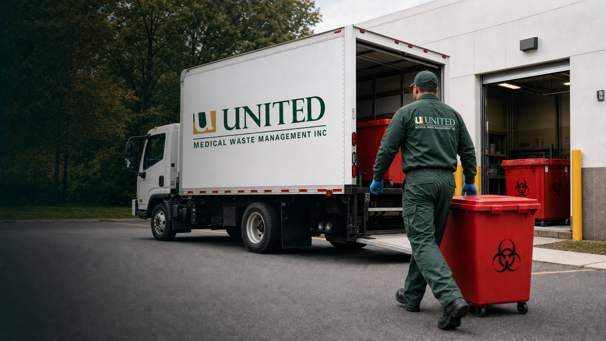
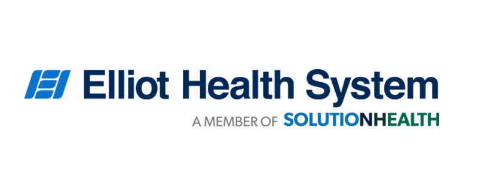
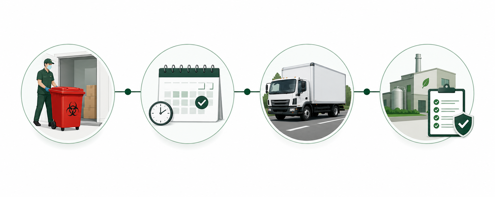

Medical Waste Disposal Services
Regulated medical waste pickup for red bag waste, sharps, and related healthcare waste streams, with containers, transport records, and documentation support.
Learn more
United Medical Waste
The largest independently owned provider of regulated waste services, serving New England facilities since 2010.

Services
End-to-end services to keep your facility safe, compliant, and audit-ready.
Regulated medical waste pickup for red bag waste, sharps, and related healthcare waste streams, with containers, transport records, and documentation support.
Learn more
Sharps container programs for needles, lancets, scalpel blades, and other puncture-capable waste generated in care settings.
Learn more
Pharmaceutical waste support for expired medications, hazardous and non-hazardous drug waste, trace chemotherapy waste, and medication-related records.
Learn more
Online and on-site training support for OSHA, HIPAA, DOT, RCRA, and Bloodborne Pathogens topics tied to healthcare waste handling.
Learn more
Waste stream reviews that help facilities compare container setup, pickup frequency, segregation practices, and documentation workflows.
Learn moreA secure, documented process every step of the way.

We deliver compliant containers and supplies directly to your facility.
We pick up on your schedule, on time, every time.
Licensed drivers transport waste using DOT-compliant vehicles.
Waste is treated at permitted facilities and full records are provided.
Program Review
Replace confusing service terms with a right-sized waste program built around your facility, pickup schedule, waste streams, and documentation needs.
Industries
Practical waste solutions for healthcare, research, education, and care environments.
New England Coverage
United Medical Waste serves Massachusetts, Rhode Island, Connecticut, New Hampshire, Vermont, and Maine from Sutton, MA.
View Service AreasUnited Medical Waste has been our trusted partner for over 15 years. Their personal service and compliance expertise give us complete peace of mind.
Norma B. · Practice Administrator · Multi-Specialty Clinic, Massachusetts
Contact
Share the basics and the team will follow up about pickup, containers, records, training, or audits.
Review your current service, documentation, pickup schedule, and waste streams with a regional medical waste team.
Request Free AuditContact Us Labs
Labs